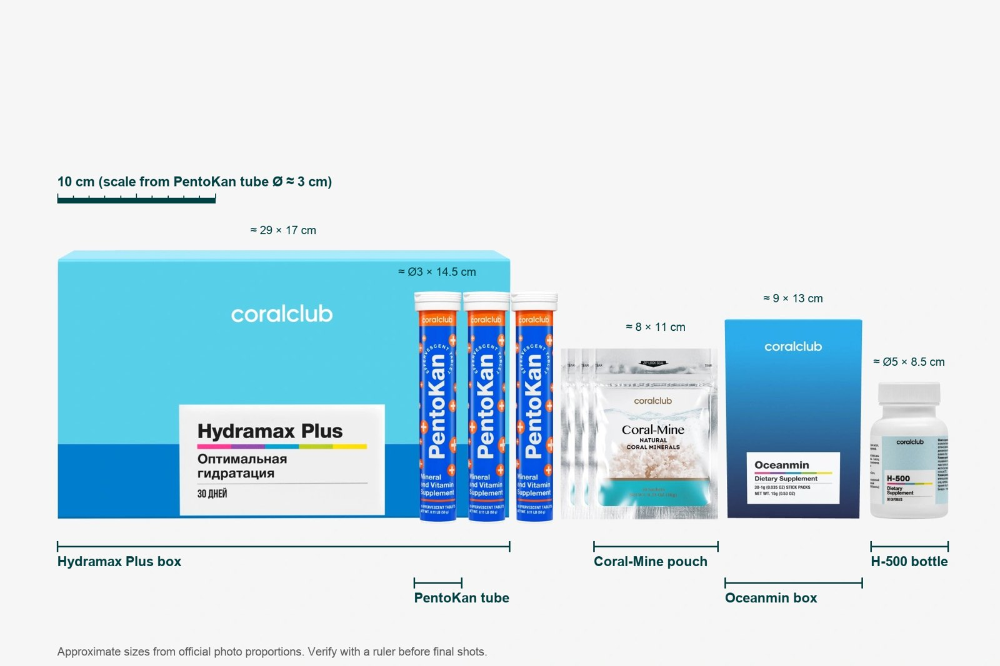
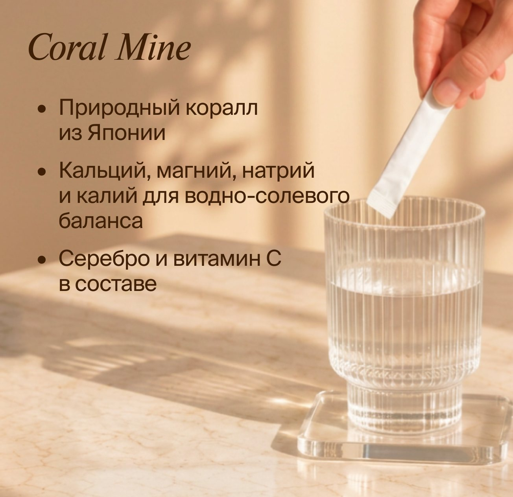

Корал-Майн Сильвер stable
Факты
Источник — карточка товара на coralclub.ru. Тексты на картинках берём только отсюда.
Параметр | Значение |
Артикулы | 2200 — 3 × 10 саше; 2201 — 10 саше |
Форма | Саше. Закрытый пористый пакетик (как чайный), внутри гранулы измельчённого коралла. Саше кладут в воду целиком, не вскрывая. |
Упаковка | Zip-пакет на 10 саше; артикул 2200 — три таких пакета (30 саше) |
Размер | Zip-пакет ≈ 8 × 11 см; одно саше ≈ 2,5 × 9 см |
Применение | 1 саше, не вскрывая, в 1,5 л воды (воды можно в 2–3 раза меньше). Лучше бутилированная или фильтрованная вода. Через 5 минут вода готова. Приготовленную воду выпить в течение дня. |
На сколько хватит | 1 саше в день: 3 × 10 саше — на 30 дней, 10 саше — на 10 дней |
Страна производства | Япония |
Срок годности | 5 лет |
Главное правило кадра
Саше целое и закрытое.
В воду опускают целиком.

Так высыпается только Оушенмин. У Корал-Майн из саше ничего не сыплется.
Фото продукта для референса
Состав
Количество на 1 саше.
Ингредиент | Количество |
Измельчённый коралл, мг | 994 |
L-аскорбиновая кислота, мг | 5 |
Серебро, мг | 1 |
Что поправить в примерах
Один пакет — это артикул 2201 (10 саше). Для 2200 (3 × 10 саше) в кадре нужны три пакета.

Один пакет и одно саше: объём покупки (30 саше) не считывается. Нужны 10 саше веером у открытого пакета и ещё 2 пакета сзади.

Не хватает главного: саше не вскрывают, вода готова через 5 минут, упаковки хватит на 30 дней.
1. Упаковка на сером фоне
Покупатель узнаёт товар и видит, что именно приедет.
- Фон ровный светло-серый #EFEFEF, без градиента и предметов.
- Упаковка спереди, по центру, занимает около 70% высоты кадра.
- Мягкая контактная тень под упаковкой, без отражений.
- Если артикул — несколько упаковок (например, Корал-Майн 3 × 10), в кадре все упаковки.
- Без текста.
Use the attached product photos as the exact product: keep its shape, proportions, colors, label, logo and every printed word unchanged. Do not redraw, translate or invent label text. Studio e-commerce packshot: three Coral-Mine Silver zip pouches standing side by side, front view (the 3 × 10 sachets pack). Flat seamless light grey background #EFEFEF, no gradient, no props. The product is centered and fills about 70% of the frame height. Soft natural contact shadow under it, no reflections, even soft light, true colors. Real size: the zip pouch is about 8 × 11 cm (slightly taller than the 9 cm glass), one sachet is about 2.5 × 9 cm (about as long as the glass is tall). Square 1:1, 2000 × 2000 px. No text, no watermarks.Приложить к промту:
2. Упаковка в интерьере и что внутри
Понятен объём покупки и реальный размер упаковки.
Пример из текущей галереи- Интерьер из референсов, тёплый свет из окна.
- Рядом с упаковкой — её содержимое: саше, стики, таблетки или капсулы. Количество считывается: 10 саше веером, 15 стиков, таблетки стопкой.
- Рядом — рифлёный стакан (9 см): по нему виден реальный размер упаковки.
- Можно одну плашку: «30 саше · 30 дней». Без других надписей.
Плашка (добавить в Figma): 30 саше · 30 дней
Premium wellness e-commerce photography in a warm, sunlit, minimalist interior. Golden-hour hard window light from the side, long crisp shadows with soft leaf and window-frame patterns. Materials: natural oak wood, beige travertine or light warm marble, warm beige walls, a vertical slatted oak panel in the background, a ceramic vase with a dried flower or olive branch. Calm, airy and realistic, true-to-life colors, shallow depth of field, 50–85 mm lens look. Square 1:1, 2000 × 2000 px. No watermarks, no extra logos, no invented text. Scene: a warm oak dining table in low sunlight, ribbed glass of water on a round travertine tray, ceramic vase with an olive branch, vertical slatted oak wall panel. Use the attached product photos as the exact product: keep its shape, proportions, colors, label, logo and every printed word unchanged. Do not redraw, translate or invent label text. Show the purchased quantity clearly: one Coral-Mine Silver zip pouch standing upright and open, its 10 sealed white sachets fanned out neatly on the table in front of it, two more closed pouches behind it — 3 pouches × 10 sachets; a ribbed glass of water on a travertine tray next to them. Real size: the zip pouch is about 8 × 11 cm (slightly taller than the 9 cm glass), one sachet is about 2.5 × 9 cm (about as long as the glass is tall). Keep everything to real scale: the ribbed drinking glass is 9 cm tall and 8 cm wide (about 300 ml), an adult hand is about 18 cm long, the round travertine tray is about 28 cm across. The sachet is a sealed porous tea-bag-like white pouch with coral granules visible through it. It always stays whole and sealed and goes into the water whole. Nothing ever pours out of it: no powder, no granules, no spill, no torn edge, never opened or cut. No text in the image.Приложить к промту:
 интерьер: Дубовый стол, солнечный свет
интерьер: Дубовый стол, солнечный свет стакан 9 см — мерка масштаба
стакан 9 см — мерка масштаба
линейка масштаба упаковок пример этой карточки (стиль и композиция)
пример этой карточки (стиль и композиция)3. Killer claims
3–4 сильных факта о продукте, которые хочется запомнить.

Пример из текущей галереи- Сцена: предмет интерьера + способ употребления продукта (саше в стакан, таблетка шипит, порошок сыплется).
- Сцена и предмет не повторяют карточки 2 и 4 этого продукта.
- Факты не повторяют карточки 4 и 5: здесь нет дозировки и цифр из таблицы состава.
- Факты не повторяются между продуктами: у каждого свой набор.
- Текст — на спокойной половине кадра, которую оставляем пустой.
Текст на карточке: Корал-Майн — Природный коралл из Японии · Кальций, магний, натрий и калий для водно-солевого баланса · Серебро и витамин C в составе
Premium wellness e-commerce photography in a warm, sunlit, minimalist interior. Golden-hour hard window light from the side, long crisp shadows with soft leaf and window-frame patterns. Materials: natural oak wood, beige travertine or light warm marble, warm beige walls, a vertical slatted oak panel in the background, a ceramic vase with a dried flower or olive branch. Calm, airy and realistic, true-to-life colors, shallow depth of field, 50–85 mm lens look. Square 1:1, 2000 × 2000 px. No watermarks, no extra logos, no invented text. Scene: a light warm marble counter by a window, ribbed glass of water on a clear acrylic coaster, strong window-frame shadows on the wall. Use the attached product photos as the exact product: keep its shape, proportions, colors, label, logo and every printed word unchanged. Do not redraw, translate or invent label text. A ribbed glass of water on a clear acrylic coaster; a hand enters from the top right and lowers one whole sealed white sachet into the water. Real size: the zip pouch is about 8 × 11 cm (slightly taller than the 9 cm glass), one sachet is about 2.5 × 9 cm (about as long as the glass is tall). Keep everything to real scale: the ribbed drinking glass is 9 cm tall and 8 cm wide (about 300 ml), an adult hand is about 18 cm long, the round travertine tray is about 28 cm across. The sachet is a sealed porous tea-bag-like white pouch with coral granules visible through it. It always stays whole and sealed and goes into the water whole. Nothing ever pours out of it: no powder, no granules, no spill, no torn edge, never opened or cut. Keep the left half of the frame calm and empty for text. Text on that left half, color #3F2006: a title in an elegant italic serif «Корал-Майн», below it a list in a clean sans-serif: «• Природный коралл из Японии», «• Кальций, магний, натрий и калий для водно-солевого баланса», «• Серебро и витамин C в составе». Render the Russian text exactly as written, letter by letter, in the given order; no other text anywhere in the image.Premium wellness e-commerce photography in a warm, sunlit, minimalist interior. Golden-hour hard window light from the side, long crisp shadows with soft leaf and window-frame patterns. Materials: natural oak wood, beige travertine or light warm marble, warm beige walls, a vertical slatted oak panel in the background, a ceramic vase with a dried flower or olive branch. Calm, airy and realistic, true-to-life colors, shallow depth of field, 50–85 mm lens look. Square 1:1, 2000 × 2000 px. No watermarks, no extra logos, no invented text. Scene: a light warm marble counter by a window, ribbed glass of water on a clear acrylic coaster, strong window-frame shadows on the wall. Use the attached product photos as the exact product: keep its shape, proportions, colors, label, logo and every printed word unchanged. Do not redraw, translate or invent label text. A ribbed glass of water on a clear acrylic coaster; a hand enters from the top right and lowers one whole sealed white sachet into the water. Real size: the zip pouch is about 8 × 11 cm (slightly taller than the 9 cm glass), one sachet is about 2.5 × 9 cm (about as long as the glass is tall). Keep everything to real scale: the ribbed drinking glass is 9 cm tall and 8 cm wide (about 300 ml), an adult hand is about 18 cm long, the round travertine tray is about 28 cm across. The sachet is a sealed porous tea-bag-like white pouch with coral granules visible through it. It always stays whole and sealed and goes into the water whole. Nothing ever pours out of it: no powder, no granules, no spill, no torn edge, never opened or cut. Keep the left half of the frame calm and empty for a text overlay added later. No text in the image.Приложить к промту:
 интерьер: Мраморная столешница у окнастакан 9 см — мерка масштабалинейка масштаба упаковокпример этой карточки (стиль и композиция)
интерьер: Мраморная столешница у окнастакан 9 см — мерка масштабалинейка масштаба упаковокпример этой карточки (стиль и композиция)4. Как применять
Сколько, по сколько, сколько раз в день и на сколько дней хватит упаковки.
Пример из текущей галереи- Дозировка и частота — только из гайда (данные сайта).
- Объём воды показан честно: 60 мл — это четверть стакана, 1,5 л — графин.
- Последний пункт — на сколько дней хватит упаковки.
- Можно сетку 2 × 2 из шагов или одну сцену с текстом.
Текст на карточке: Как применять — 1 саше на 1,5 л воды — не вскрывая · Через 5 минут вода готова · Выпейте её в течение дня · 1 саше в день: упаковки хватит на 30 дней
Premium wellness e-commerce photography in a warm, sunlit, minimalist interior. Golden-hour hard window light from the side, long crisp shadows with soft leaf and window-frame patterns. Materials: natural oak wood, beige travertine or light warm marble, warm beige walls, a vertical slatted oak panel in the background, a ceramic vase with a dried flower or olive branch. Calm, airy and realistic, true-to-life colors, shallow depth of field, 50–85 mm lens look. Square 1:1, 2000 × 2000 px. No watermarks, no extra logos, no invented text. Scene: a close-up of a ribbed glass of water on a long white ceramic tray on an oak table, dried flowers in the corner. Use the attached product photos as the exact product: keep its shape, proportions, colors, label, logo and every printed word unchanged. Do not redraw, translate or invent label text. A 2 × 2 grid of four photos in one image, same light and angle: 1) filtered water poured into a 1.5 l glass carafe; 2) a hand lowering one whole sealed white sachet into the carafe; 3) the carafe with the sachet resting at the bottom, a small kitchen timer showing 5 minutes; 4) a hand holding a full ribbed glass of this water. Real size: the zip pouch is about 8 × 11 cm (slightly taller than the 9 cm glass), one sachet is about 2.5 × 9 cm (about as long as the glass is tall). Keep everything to real scale: the ribbed drinking glass is 9 cm tall and 8 cm wide (about 300 ml), an adult hand is about 18 cm long, the round travertine tray is about 28 cm across. The sachet is a sealed porous tea-bag-like white pouch with coral granules visible through it. It always stays whole and sealed and goes into the water whole. Nothing ever pours out of it: no powder, no granules, no spill, no torn edge, never opened or cut. Keep the bottom third of the frame calm and empty for text. Text on that bottom third, color #3F2006: a title in an elegant italic serif «Как применять», below it a list in a clean sans-serif: «• 1 саше на 1,5 л воды — не вскрывая», «• Через 5 минут вода готова», «• Выпейте её в течение дня», «• 1 саше в день: упаковки хватит на 30 дней». Render the Russian text exactly as written, letter by letter, in the given order; no other text anywhere in the image.Premium wellness e-commerce photography in a warm, sunlit, minimalist interior. Golden-hour hard window light from the side, long crisp shadows with soft leaf and window-frame patterns. Materials: natural oak wood, beige travertine or light warm marble, warm beige walls, a vertical slatted oak panel in the background, a ceramic vase with a dried flower or olive branch. Calm, airy and realistic, true-to-life colors, shallow depth of field, 50–85 mm lens look. Square 1:1, 2000 × 2000 px. No watermarks, no extra logos, no invented text. Scene: a close-up of a ribbed glass of water on a long white ceramic tray on an oak table, dried flowers in the corner. Use the attached product photos as the exact product: keep its shape, proportions, colors, label, logo and every printed word unchanged. Do not redraw, translate or invent label text. A 2 × 2 grid of four photos in one image, same light and angle: 1) filtered water poured into a 1.5 l glass carafe; 2) a hand lowering one whole sealed white sachet into the carafe; 3) the carafe with the sachet resting at the bottom, a small kitchen timer showing 5 minutes; 4) a hand holding a full ribbed glass of this water. Real size: the zip pouch is about 8 × 11 cm (slightly taller than the 9 cm glass), one sachet is about 2.5 × 9 cm (about as long as the glass is tall). Keep everything to real scale: the ribbed drinking glass is 9 cm tall and 8 cm wide (about 300 ml), an adult hand is about 18 cm long, the round travertine tray is about 28 cm across. The sachet is a sealed porous tea-bag-like white pouch with coral granules visible through it. It always stays whole and sealed and goes into the water whole. Nothing ever pours out of it: no powder, no granules, no spill, no torn edge, never opened or cut. Keep the bottom third of the frame calm and empty for a text overlay added later. No text in the image.Приложить к промту:
 интерьер: Стакан на подносе, крупный планстакан 9 см — мерка масштабалинейка масштаба упаковок
интерьер: Стакан на подносе, крупный планстакан 9 см — мерка масштабалинейка масштаба упаковок пример этой карточки (стиль и композиция)
пример этой карточки (стиль и композиция)5. Состав
Полный состав в виде таблицы, как на упаковке.
 Пример из текущей галереи
Пример из текущей галереи- Типографская карточка без фото, фон #F8EFE6, текст #3F2006.
- Заголовок «Состав», таблица: ингредиент · количество · % РУСП (если есть).
- Единица в шапке — своя у каждого продукта: на 1 саше, на 1 таблетку, на 1 стик, на 1 капсулу.
- Сноски и «БАД. Не является лекарственным средством» — внизу мелким текстом.
- Цифры ИИ путает — карточку лучше собрать в Figma, промт ниже — запасной.
Typographic product card, no photo. Square 1:1, 2000 × 2000 px. Flat background #F8EFE6, all text #3F2006. Title centered at the top in an elegant italic serif: «Состав». Below it a clean table in a sans-serif, thick black rule above and below the header row, thin rules between rows. Header: «Название ингредиента» | «Количество на 1 саше». Rows: «Измельчённый коралл, мг» | «994»; «L-аскорбиновая кислота, мг» | «5»; «Серебро, мг» | «1». Small footnotes at the bottom, one per line: «Страна производства: Япония. Срок годности: 5 лет.», «БАД. Не является лекарственным средством.». Render the Russian text exactly as written, letter by letter, in the given order; no other text anywhere in the image.Приложить к промту: